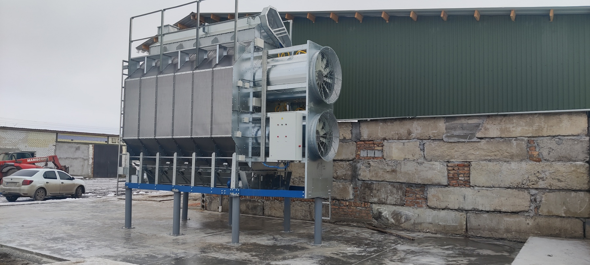

ОДНОМОДУЛЬНІ СУШАРКИ

Особливістю одномодульної зерносушарки «Agro Star™» з двома вентиляторами та пальниками є можливість одночасного нагріву та охолодження зерна в сушарці, отримуючи при цьому готовий продукт для подальшої очистки або зберігання.
Іншою особливістю цієї ж зерносушарки є можливість повністю нагрівати в собі зерно, а завдяки розділеним камерам нагріву можливо плавно та поступово нагрівати зерно, яке проходить через сушарку.
Крім цього, охолоджуючи зерно в зовнішніх бункерах з активним вентилюванням, додатково знімається 1-2% вологи завдяки вентиляції холодним повітрям.
ОДНОМОДУЛЬНІ СУШАРКИ З ОДНИМ ВЕНТИЛЯТОРОМ
| Модель | 0411 | 0511 | 0611 | 0711 | 0811 | 0911 | 1011 |
|---|---|---|---|---|---|---|---|
| Кількість секцій, шт. | 4 | 5 | 6 | 7 | 8 | 9 | 10 |
| Кількість вентиляторів, шт. | 1 | 1 | 1 | 1 | 1 | 1 | 1 |
| Довжина, мм. | 4580 | 5180 | 5800 | 6400 | 7030 | 7640 | 8250 |
| Ширина, мм. | 2430 | 2430 | 2430 | 2430 | 2430 | 2430 | 2430 |
| Висота, мм. | 4250 | 4250 | 4250 | 4250 | 4250 | 4250 | 4250 |
| Об'єм, м³ | 7,2 | 9 | 10,6 | 12,4 | 14,1 | 15,9 | 17,6 |
| Загальна електрична потужність, кВт | 23,5 | 23,5 | 27,5 | 27,5 | 31 | 34,5 | 42,5 |
| Продуктивність, т/год., кукурудза | |||||||
| 29-14% без охолодження в сушарці | 4 | 4,5 | 5 | 5,5 | 6 | 7 | 9 |
| 24-14% без охолодження в сушарці | 6 | 7 | 8 | 9 | 10 | 12 | 14 |
| 19-14% без охолодження в сушарці | 10 | 12 | 14 | 15,5 | 17,5 | 20 | 24 |